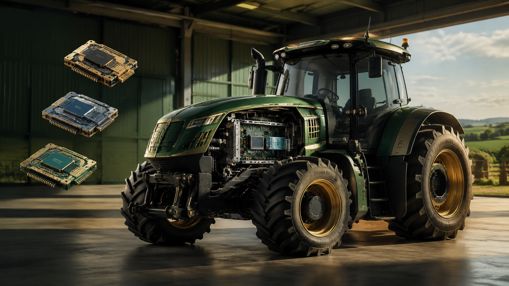
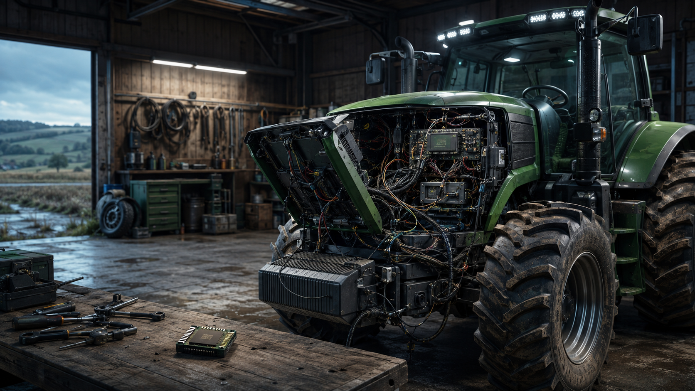
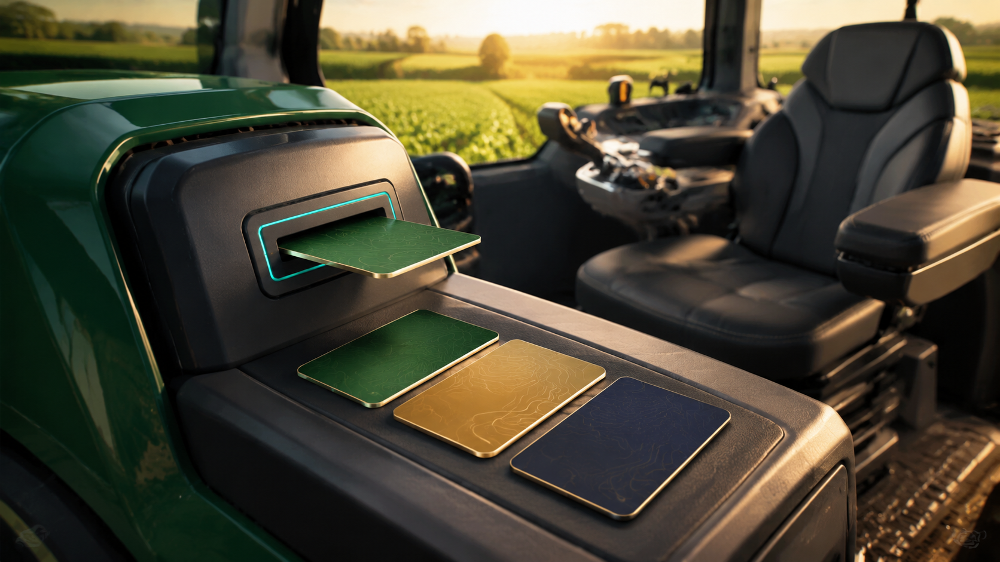

CODEX
无人拖拉机
负责把任务真正跑起来。
别把它当新模型。它更像是给 Codex 准备的智能卡槽。

模型决定这台车怎么思考、怎么安排动作；拖拉机本身还是同一台。

想换一套配置，就像把车开进维修棚：不是能力变了，是整理设置太折腾。

每一张卡都代表一套准备好的配置。CC Switch 只负责整理、选择和切换它们。
负责把任务真正跑起来。
决定它怎样理解和完成工作。
把一套准备好的设置放在一起。
让“拆机焊线”变成管理这些卡。